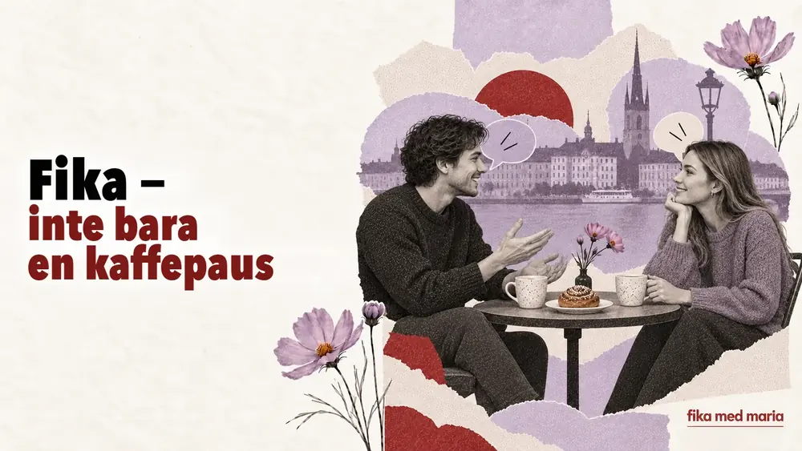

Fika är ingen kaffepaus – så förklarar en enda ritual svenska relationer

Om man översätter fika som ”kaffepaus” verkar innebörden klar. Men det viktigaste försvinner: kaffet är bara en förevändning, medan själva fikat skapar närhet.
Det är ett kort andrum där människor inte längre bara är kollegor, grannar eller mötesdeltagare. De sätter sig ner tillsammans, pratar om vardagliga saker och knyter band utan att något stort behöver hända.
Fika – substantiv, verb och förslag
På svenska kan man säga:
Ska vi ta en fika?
Ungefär: ska vi dricka en kopp kaffe eller ses en stund över en fika?
Vi fikade efter jobbet.
Ungefär: vi tog en fika tillsammans efter jobbet.
Det är dags för fika.
Ungefär: nu är det dags att ta en paus tillsammans.
Drycken behöver inte vara kaffe. Man kan dricka te eller något kallt. Viktigare är att ta en paus och dela den med andra.
Fika på jobbet – inte riktigt fri tid
På vissa arbetsplatser fikar man regelbundet, och det blir en del av arbetsrytmen. Formellt sett är det en paus, men det är just där en nykomling kan få höra sådant som inte står i några dokument:
- vem som gör vad;
- hur kollegorna skämtar;
- vilka ämnen som berör alla;
- vad de interna förkortningarna betyder;
- hur man brukar prata med varandra i arbetsgruppen.
Om man ständigt hoppar över fikat kan man utan att märka det hamna utanför det informella livet på jobbet. Det betyder inte att man alltid måste vara med. Men ibland gör tjugo minuter vid ett gemensamt bord mer för att komma in i gruppen än ännu ett jobbmejl.
Vad pratar man om?
Vilka ämnen som är säkra beror på gruppen, men ofta handlar det om:
- helgen;
- vädret;
- mat;
- tv-serier;
- resor;
- hushållssysslor;
- planer inför högtider;
- dagens små händelser.
Det går bra att börja enkelt:
Har du några planer för helgen?
Ungefär: vad ska du göra i helgen?
Har du sett den nya serien?
Ungefär: har du tittat på den nya tv-serien?
Vad gott det ser ut! Har du bakat själv?
Ungefär: det där ser verkligen gott ut! Är det du som har bakat?
Vem betalar?
Om vänner träffas på ett kafé kan var och en ofta betala för sin egen beställning. Man ska inte automatiskt tolka det som kyla eller snålhet: när alla betalar för sig minskar känslan av att stå i skuld, och träffen blir enklare.
Om du blir bjuden hem till någon är det passande att fråga:
Ska jag ta med något?
Ungefär: finns det något du vill att jag tar med?
Även om värden svarar Nej, det behövs inte, visar frågan omtanke.
Tack för fikat
Efter träffen kan man säga:
Tack för fikat!
Ungefär: tack för det goda och för stunden tillsammans.
Om träffen var i går eller för några dagar sedan:
Tack för senast!
Ungefär: tack för förra gången vi sågs.
Frasen kräver inget långt tal. Den bekräftar bara: jag hade det trevligt och jag minns vår stund tillsammans.
Varför just Fika med Maria?
Namnet Fika med Maria utlovar ingen torr genomgång av regler. Det är en inbjudan att slå dig ner bredvid, ställa en ”dum” fråga, göra fel, skratta och så småningom göra svenskan till en del av ditt liv.
En lektion kan ge kunskap. Fika skapar ett utrymme där man får lust att prata.
Gör din inbjudan konkret, inte vag:
Vill du ta en fika på torsdag efter jobbet?
Och om du inte är säker på när:
Jag tar gärna en fika någon dag. När passar det dig?
På Språkkafe träffas vi inte för att ge felfria svar, utan för levande samtal, nya ord och för att vänja oss vid att prata.
Måste fika innehålla något sött?
Nej. Bakverk är vanliga, men poängen är inte exakt vad man äter.
Kan man bjuda in någon man inte känner så väl till en fika?
Ja. Det är ett enklare och mindre formellt sätt att ses än en riktig middag hemma.